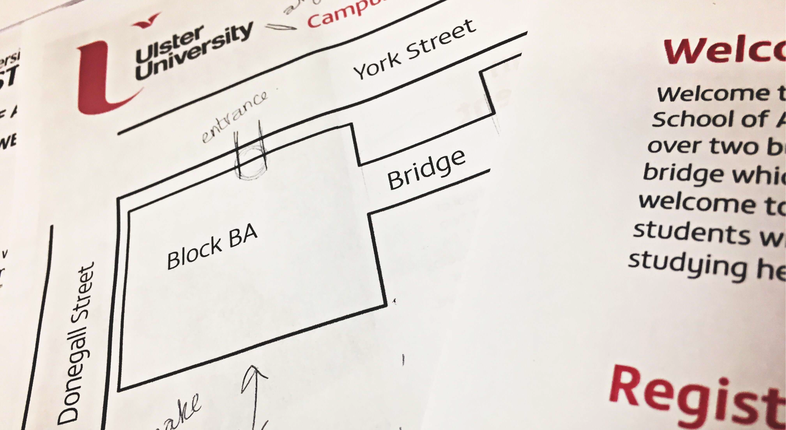
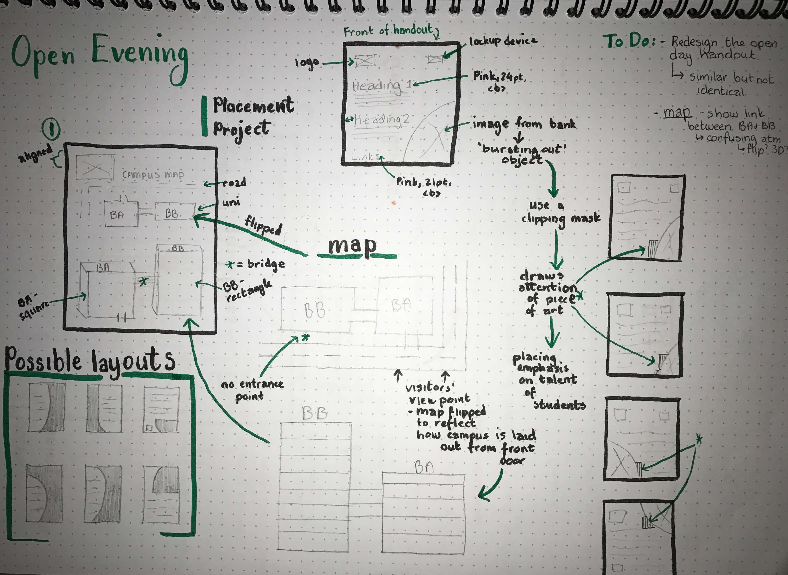
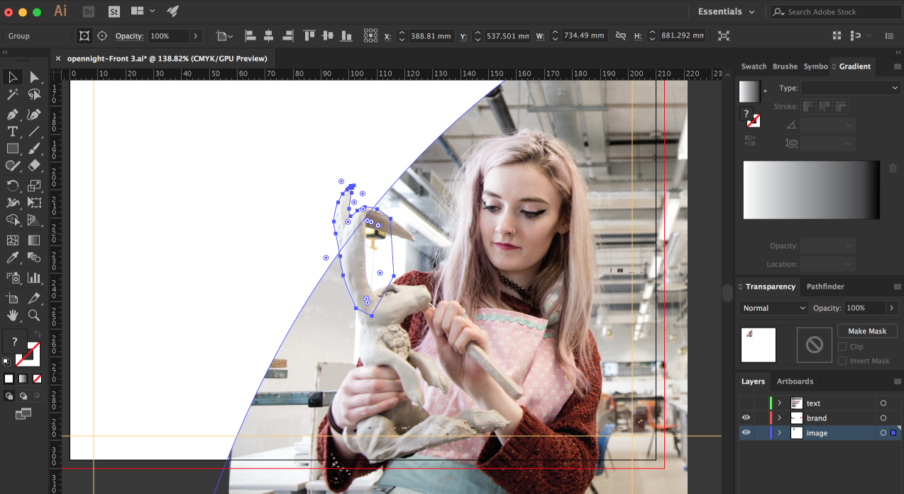
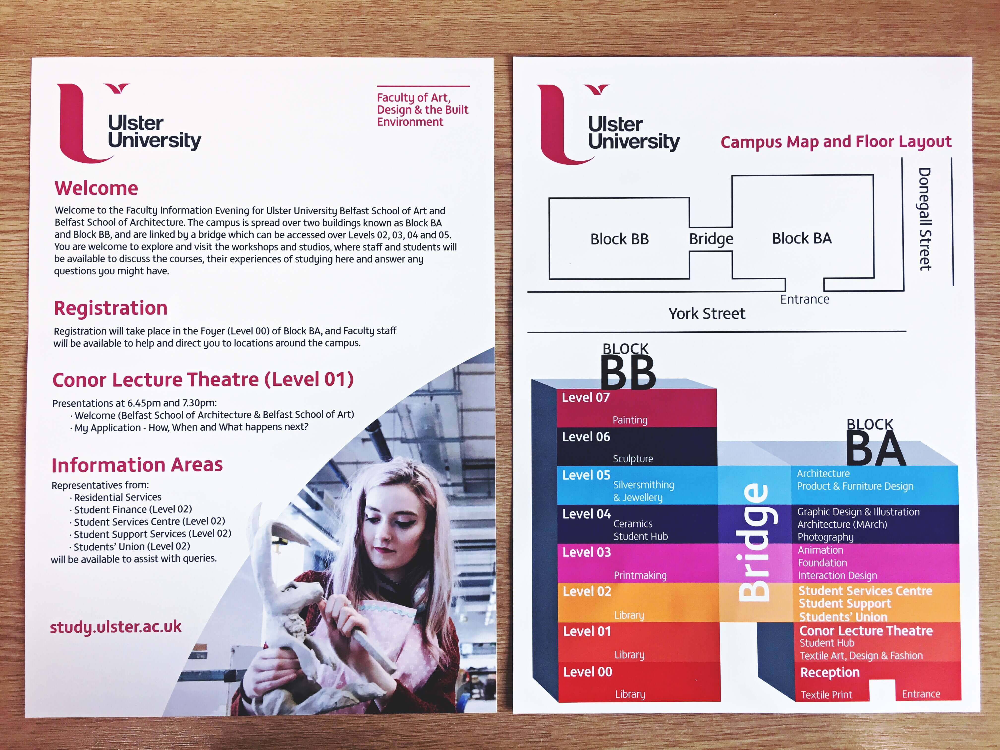

Three
Designing for Print

After all the training and meetings, I finally received my first job! With the Open Evening coming up on 25th October, I was tasked with revamping the Campus Map and Floor Layout handout which everyone will receive when they arrive at the University. My first port of call was to look at the previous year's design and pick out any problems with the design. The first thing I noticed was that not everything was aligned; the campus map was the full width of the page but the floor layout wasn't, the title and the logo weren't aligned and the Faculty's lock-up device hadn't been used. I made quick annotations to the previous design so I had somewhere to start.
I then began to sketch out a few quick ideas to revamp the handout.
For the front I decided that the writing needed to be bigger as I felt it was a little small, so I took this into consideration and changed the shape of the image on the front. I decided to go with using an 'e', which was zoomed in on positioned at the bottom right. When I was adding the image into the clipping mask on Illustrator I decided to allow an object to 'burst out' of the boundaries, this can be seen at the ears of the sculpture. It makes the image a little more interesting and places an emphasis on what is being created and shows off the talent in Belfast School of Art. I also added in the lock-up device to the top corner and aligned it with the logo according to the brand guidelines.
Moving on to the back of the handout, I aligned the title with the logo so it looked clean. Going off of the previous year's design, I flipped the campus map to reflect what the visitor will see when they are standing at the front door. As I wasn't fully aware of the Belfast Campus before starting my placement I was able to use this perspective to create a design which is easily understood. With this, I also added in a space for the entrance to show that visitors can only enter through this one location.
Finally I moved onto designing the floor layout. This part of the handout I found confusing as well. The way in which the floors were labelled was easy to understand, but again the layout made it seem as though Block BB was where visitors entered. So, I flipped this design also to keep it consistent with the campus map and decided to take an isometric approach to the design, to change it up a little. I added some depth to the blocks, making Block BA wider than BB, and BB longer than BA. I labelled the bridge clearly to mark where the Blocks were joined, and added in an entrance point. To ensure that there wasn't any confusion I labelled the Block BA and BB at the top of the layout.

My redesigns were shown to Phil and Deborah and together we checked over them and made some minor tweaks with colours and wording based off of the draft print. Finally it was time to ensure that the bleed and printer marks were added and it was ready to be sent to Repographics to be printed out for the visitors. You can see the final outcome below. The leaflets were printed onto 300gsm silk paper.
I enjoyed my first experience in designing a handout within the University's guidelines; it wasn't as difficult as I had anticipated, because I thought I would have had to keep referring back to them and making changes to my designs but everything fit in with the guidelines the first time around. I'm glad I was able to use my experince in designing for print through my freelancing as this saved some time when it came to setting up the document and sending it to the printer.
Placement Journal
Paige Boyd